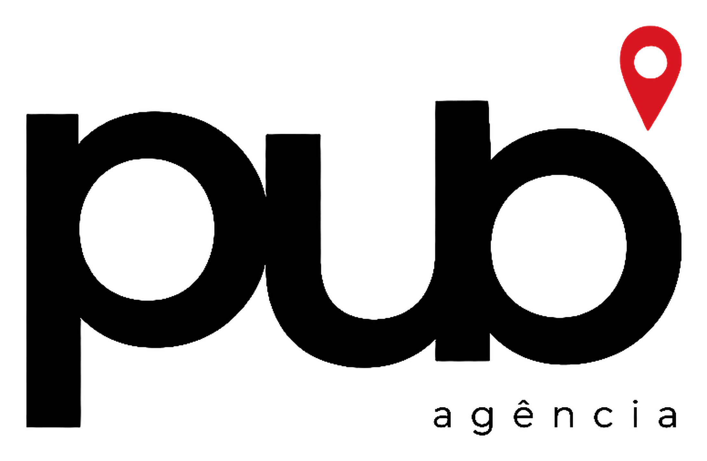

Ser encontrado
SEO, conteúdo de busca, presença local e páginas preparadas para intenção real.

Falar com a PUBA PUB cria campanhas, mídia paga, SEO, conteúdo e landing pages para transformar atenção em demanda qualificada. Da busca ao clique. Do clique à conversão.
Histórico público
A trajetória pública da PUB atravessa diferentes contextos de atenção: marcas, artistas, casas de show, entretenimento, conteúdo, campanha e presença digital.
Depoimentos em vídeo
O que a PUB faz
Sistema de aquisição
A PUB conecta estratégia de campanha, tráfego pago, SEO, conteúdo e página para que a marca seja encontrada, entendida e escolhida com menos improviso.
SEO, conteúdo de busca, presença local e páginas preparadas para intenção real.
Campanhas, criativos, segmentação e mensagem para atrair quem tem contexto.
Landing pages, copy, oferta, formulários e leitura de sinais para reduzir ruído.
Diagnóstico de aquisição
Busca, mídia, criativo, página, oferta e mensuração precisam trabalhar como um sistema. O diagnóstico inicial mostra onde a marca está perdendo intenção, clique ou conversão.
Solicitar diagnósticoO que as pessoas procuram, onde a marca aparece e que páginas deveriam existir.
Quais campanhas, públicos e criativos sustentam a promessa certa.
Como oferta, prova, formulário e mensuração reduzem atrito.
Como a PUB trabalha
Para quem
Nem toda empresa precisa de mais posts. Algumas precisam de busca, campanha, página e método.
Comece pela aquisição
A PUB estrutura publicidade, SEO, criativos, páginas e mensuração para marcas, empresas e projetos transformarem visibilidade em demanda com mais consistência.
Solicitar diagnóstico